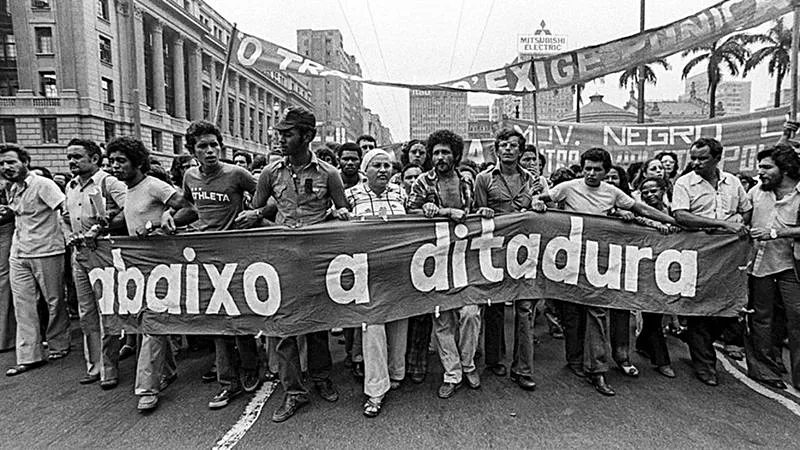
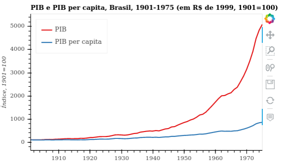

Política
O golpe militar de 1964 derrubou o presidente João Goulart, marcando o início da Ditadura Militar (1964–1985), período caracterizado por censura, repressão política e perseguição a opositores.
Presidentes militares do período:
- Castelo Branco (1964–1967)
- Costa e Silva (1967–1969)
- Médici (1969–1974) – auge do “milagre econômico” e repressão intensa
- Geisel (1974–1979) – início da abertura política lenta
- Figueiredo (1979–1985) – transição para a democracia
Em 1968, o AI-5 aumentou a repressão, fechou o Congresso e censurou imprensa, música e teatro. Movimentos de resistência cultural e política surgiram, reivindicando liberdade e democracia.
Economia
O período econômico ficou marcado pelo “milagre econômico” (1968–1973), com crescimento rápido do PIB, aumento da industrialização e grandes obras de infraestrutura.
A crise do petróleo (1973) trouxe aumento da dívida externa, inflação e dificuldades econômicas. A urbanização acelerou, com migração do campo para centros urbanos, mas a desigualdade social persistiu, afetando a população mais pobre.
Sociedade
Movimentos estudantis e sociais contestavam a ditadura, reivindicando direitos civis e políticos. A censura cultural afetava livros, jornais, músicas e peças de teatro.
A juventude experimentava novas formas de comportamento: surgimento do movimento hippie, roupas coloridas, cabelos longos e contestação dos padrões tradicionais.
A educação se expandiu, com aumento da população estudantil e maior acesso ao ensino superior, principalmente nas grandes cidades.

Cultura
A música popular brasileira destacou-se com o movimento Tropicália e artistas como Caetano Veloso, Gilberto Gil e Chico Buarque, que mesclavam crítica social e inovação artística.
A televisão tornou-se o principal meio de comunicação e entretenimento. No Cinema Novo, filmes retratavam desigualdades sociais e criticavam o regime.
Na moda, calças boca de sino, vestidos rodados e estampas psicodélicas marcaram o período, mostrando resistência e criatividade mesmo sob censura intensa.